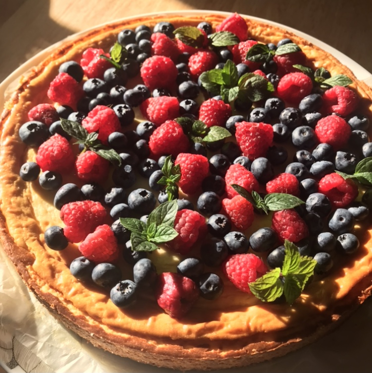

Amerikkalainenjuustokakku

Ainekset:
Pohja
Täyte
- 5 klp liivate
- 2 tlk kuohukerma
- 2 prk tuorejuustoa
- 3 tl sitruunamehua
- 1 dl sokeria
- 2 tl vaniliinisokeria
Päällyskerros
- 3 tlk Mangopiltti
- 3 klp liivate
Ohje
- Hienonna keksi ja sekoita sulatettu voi joukkoon.
- Levitä keksivoi irtopohjavuokaan ja laita jääkaappiin odottamaan.
- Laita Liivatteet veteen pehmenemään ja vatkaa kerma.
- Sekoita joukkoon vatkattu kerma, tuorejuusto, sokeri, vaniliinisokeri ja sitruunamehu.
- Purista liivatteet kuiviksi ja lisää kuumaan veteen.
- Kaada ohuena nauhana tuorejuusto seokseen ja kaada vuokaan. Anna jäähtyä jääkaapissa sillo
välin.
- Tee uudelleen liivate seos ja laita mangopilttiin.
- Kaada mangoseos vuokaan ja anna jääkaapissa jäähtyä vähintään pari tuntia ennen tarjoilua.